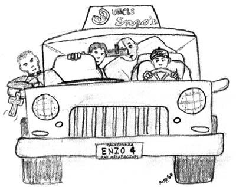

Thanks to Oz for this detailed transcript.
Session start: Saturday, December 31, 2033 – 2200 PST
In the alley behind Angels the massive dog (a little smaller than a cow) falls to the ground limp as a woman rolls onto the street from its jaws.
BLAM! Matt shoots the woman directly through her forehead without any warning. Everyone turns startled as the priest yells out, "You fool! Killing her will only cause the loss of your friend. The stake through her heart has put her in torpor." Matt asks if the dog can safely be killed. The priest says that is a good idea. Matt shoots five bullets aiming at the dog's head and chest.
The priest introduces himself as Raphael Douglas, a Catholic priest who has traveled far to defeat the evil that has manifested itself in Pax. He tells us the woman and dog are demons from HELL!
Liam asks whether Father Douglas talks to God. Father Douglas asks whether Liam has ever spoken with God. Liam thinks for a while and stammers out that he has heard the radio network of God. Father Douglas cuts Liam off shouting, "That is voice of SATAN!" There is some silence as we all continue to get a creepy vibe from this priest.
Jack breaks the silence asking how this demon came to be here. Father Douglas tells us, "Evil wants to come and take the world. The demon's song affected only those who are touched, those that possess special unworldly powers. Several of these demons are infiltrating this city as I speak. Their den of evil is less than two hours."
We in silence watch the creepy Father Douglas rolls his eyes into his head for a few seconds. Breaking out of his trance he says, "Things are worse then I thought. Try your technology." Liam checks his phone and computer and no network is available. Jack already knows things are not working. Father Douglass tells us that this is not localized to this city and he must seek out and resolve this problem.
Matt asks Father Douglas whether Half-Pint can be brought back. The priest wants assistance from us as payment for helping. Matt immediately agrees to that.
The discussion is then side tracked for a while on what happened. The priest tells us he destroyed the den of evil, but some the creature had already left. He followed them to Pax. These demons are likely in places where there are large crowds.
The discussion changes again to how to fix the network outage. Father Douglas suggests, first checking various technologies and see if they work. Then determine what is wrong and correct it. Liam and Jack leave the alley to pursue some solutions.
Jack returns back to the bar and sees the TV is out. Only test broadcast is playing. Some pre-recorded music TV plays back to calm the audience. Jack hopes everything will be back by midnight.
Liam asks Mike ("red shirt" employee at Angels) at the front door whether he can use the phone (Mike says no). Liam asks where Jack is and Mike tells him he is in the backroom working with the sound system. On his way to the backroom, Liam runs into Shannon, and they have a spat. She's fairly annoyed that Liam has left her by herself. Liam responds with, "I have to meet with Jack in the back room."
Shannon unimpressed and very annoyed retorts, "If you don't want to be here with me, just say so!" Liam calms Shannon down and shows her that the network is down. Shannon being a geek is intrigued and is now genuinely interested in pursuing this investigation with Liam. They go together to find Jack as she says, "I better not find out you arranged all of this to get out of this date."
Jack, Liam, and Shannon meet up and hypothesize that it is just wireless/satellite systems that are down. They talk with Zuul at Magitech on the landline. The most recent news being that Bishop loss his memory very recently and William Moss is trying to help him.
Liam invites Shannon to head to the top floor of Magitech to investigate this further.
Back in the alley, Matt tries to convince Lee that he has mystical abilities. Lee remains unconvinced. The priest tries to explain these realities to Lee. Lee begins to consider this might be a real possibility. Gordon silently listens.
Shannon and Liam come into the alley. The priest asks again if folks will promise to help Father Douglas with these demons and the technology problems. Liam agrees to help without making any promises to the priest.
Father Douglas turns to Gordon and says he senses things in Gordon that he knows about. Gordon looks concerned. Gordon is thinking internally that maybe the dog would be good eating and is personally horrified that he would even consider that (dogs are man's best friend)! Father Douglas senses a darkness from within Gordon. Gordon steps back away from the priest and agrees to help Half-Pint out. Shannon is a little confused about what's going on, asking Liam for details. Lee decides to help by getting some pizzas for the priest. Only four pies are left!
 Liam and Shannon go to Magitech. Jack stays at the bar. Lee, Gordon, Matt, Father Douglas, and the woman in torpor drive to Saint Michaels in Lee's car—a pizza delivery SUV with its own oven in the back. Gordon shudders as he considers eating dog again. Father Douglas tells us that he had mishap with his motorcycle today.
{kind=link}
Taking the side entrance into Saint Michaels we place the woman in torpor on small altar and Father Douglas locks the doors. He opens his book and begins chanting in Latin. We watch the woman begins transforming into a whirlwind of particles and motes of light. The room fills with a feeling of magical backlash. It is just there, everywhere, nowhere specific. All the particles and motes of light reform into Half-Pint.
No one is sure what to say, but Half-Pint breaks in wondering what the heck is going on. We fill Half-Pint in on all that has happened. Half-Pint decides to go with us to hunt more demons down and kick their asses.
We leave to find Daniel Miller to see if he might be of any help. Half-Pint goes to find the Fabulous Five to kick some demon ass. We agree to meet at Magitech HQ.
In the car to Magitech, Shannon asks Liam what's going on. Liam asks, "How much do you want to know?" She wants the truth. Liam tells Shannon generally things are happening without being terribly specific. Shannon very aware of this says, "You still haven't told me anything! You talk about 'things' and 'stuff.'" Liam lamely replies, "Ask me what you want to know." Shannon replies, "That's evasive," as they pull into Magitech's parking lot.
An the way up the elevator, Liam tells Shannon that we had a final confrontation with those responsible behind the attacks on Pax and the bombing. Shannon sharply suggests they likely had friends and can't believe we just assumed that everything was taken cared of. The elevators door opens.
Jack checks the surveillance tapes to see if he can determine how the woman singer came in. She came through the front door while Jack was not working and walked straight to the stage. Jack then checks with some regulars and employees to see if anyone has seen her before. No one knows who she is.
Reviewing more surveillance tapes, the short guy simply appeared and disappeared on the tapes. Jack checks a few other things and makes sure the party finishes out quietly.
Lee, Gordon, Raphael, and Matt go to Daniel Miller's apartment and then his university office. They are all frustrated that the network is down and that finding people is so hard.
Shannon and Liam walking out of the elevator see Zuul madly typing away. Zuul says he's traced the interference to some source close by. He's devised a scheme to measure the amount of interference. The interference is a hundred times stronger than needed to disrupt all wireless communications.
Zuul is sure this is not a natural phenomenon. Shannon suggests it might be a terrorist attack. Zuul suggests maybe there many of these sources around the world. Using the "magical" network of sensors around the city, he believes he can narrow where the source of the interference is.
As the three of them are working on this together, Shannon notices the sensors are everywhere including private locations. Liam lamely tries to defend this invasion of privacy. Shannon wonders how everything was replaced after the bomb—especially personal one-of-a-kind items. She laments, "Buttons isn't buttons?" (referring to her teddy bear...)
Shannon notices that interference at higher altitudes is stronger. Liam checks the computer and confirms. They localize it above the sensors, triangulating a mile or two above the city.
Father Douglas and company get to the Garden (the city park owned by the Way of Janell), where there is a huge hippy-like crowd is celebrating New Years, giving out free food, prizes, etc. As we pull up we hear someone calming the crowd, telling them authorities are doing what they can and reassuring them to continue to enjoy the festivities.
Talking to various folks we determine that Sara was speaking to everyone, when a woman began to sing and something happened. There was some kind of struggle, a shorter man stopped the singing and then a beast appeared. A spandex-clad figure grappled with the dog, but no one seems to recall exactly what happened next, or where all these strange characters went.
We go up and around the bend where the huge dog, short man, Sara, and singing woman disappeared. Nothing is there. Matt kneels down, closes his eyes, saying he wants to sense what happened. He meditates in silence for five seconds or so and starts retelling what happened.
"I see another beautiful woman like the one we encountered walking to the microphone and singing. She entrances the crowd, except for Sara, who is standing nearby. Gerald bursts forth from a cafe across the street, while a half-dozen folks walk forward towards the woman. Sara is concentrating and suddenly there is silence. All sorts of gun fire and fighting begin around the woman. A man wearing spandex with a large "SD" on his chest flying in the air lands in front of the beautiful woman. I see a huge dog appear out of nowhere. Some sort of fog rolls in, and everything becomes clouded. I can't see or hear anything anymore. I can't see anymore."
Half-Pint finds the Winston, Bubbles, and Toothy at the Fresh Cafe. Half-Pint fills them in on what has been going on.
Liam calls the astronauts at the space station. Commander Dick Buckley is anxious to return to Earth. Their supplies are dwindling. They have also noticed the communications block out up in space and are happy to hear from base camp. Liam and Dick determine that taking more measurements from the Lift a mile or two above ground might provide more information.
Liam uses the sensors to locate us at the park. Using the emergency communication holographic projection system, his head appears to us. He informs us of what he, Shannon, Zuul, and Dick have discovered. He tells us to meet at the Lift. Liam contacts Jack and the Fabulous Four ( Lefty is out of town somewhere) as well.
The last group gets to the Lift by 0030 hours. We split up. Father Douglas, Gordon, Matt, Liam, Shannon, and Lee board the lift. The rest will stay on the ground.
Matt's head is pounding, nearly impossible to concentrate. He can barely remember why he is on the lift. He doesn't hear of notice as the Lift starts taking off at a hundred miles an hour.
Lee has a premonition that something is wrong. It feels as though he is being watched. He gets to the control room and shares his concern with Liam and Shannon. Liam suggests it might just be the cameras. Lee says he feels like he's being watched and this is all a trap and it isn't because of the cameras. Liam blows Lee off.
Lee leaves and finds Father Douglas explaining his strange spider sense acting up. Father Douglas tells him that it is nothing. Lee insists it is something more. Father Douglas gets his Bible out and begins reading in Latin.
Something bites the back of Liam's neck. Liam tells Shannon who is surprised. There are no bugs in Pax. Why would they be on the Lift? Shannon checks Liam's neck and sees a small welt. Liam uses the system locate the Father Douglas.
Something bites the back of Jack's neck. Jack, wondering what the hell happened, looks around. The fabulous four and Jack are all concerned.
Something bites the back of Matt's neck. It barely registers with this pounding headache. Matt uses his stethoscope to see if it can help with his head or the welt he feels on the back of his neck. It heals the welt completely. His head is clear for a moment and then more pain.
Father Douglas stops reading Latin and scans the room. He points right behind where Matt is sitting saying there is a person right there. Two silenced gunshots strike Father Douglas in the chest from the place where he was pointing.
Jack and the Fabulous Four spread out taking a defensive posture. Once Jack is alone, he hears a woman's voice and a ripple in the air near him asking, "What are you doing here?" Jack walks towards the voice. She warns him to back off, and that there is a gun trained to his head.
Matt stumbles to Father Douglas attending to the gunshot wound. Everyone else is on edge looking for whatever it was that shot Father Douglas. Liam and Shannon talking to the others find out about the invisible intruder on the Lift. They lock the door to the control room and begin to scan for anything unusual.
The voice wants to know what Jack and his friends are trying to accomplish. They both try to get information from each other, but neither is sharing. The voice ends by telling Jack to stay where he is at or be shot. Looking carefully, Jack sees occasionally ripples in the air assuming that is her moving around.
Working with the sensors, Shannon and Liam locate that the network interference is localized at 7,000 feet. They slow the Lift to stop and find that the exact location seems to be fluctuating or moving around. They find no other unusual readings.
Father Douglas is looking much better after Matt tends to the gunshot wounds. Everything is quiet as there is no sign of the intruder. Matt tells Father Douglas to go to the front with his insurance card to fill out paperwork. Father Douglas sees that Matt is very confused begins drawing the mystical backlash from Matt's head. Matt's mind clears up as the remaining wounds on Father Douglas begin healing themselves.
Jack decides to tackle the invisible woman. She sighs in disappointment and shoots him. It has some sort of sleep effect, which Jack shrugs off and then grapples her. After some struggling, she collapses from the electric jolt of Jack's brass knuckles. Jack ties her up, finding and removing strange belt with a device attached to it. The woman becomes visible when the belt is removed. Jack wears the belt and becomes invisible.
Gordon points at something out the Lift window. Matt pulls out his IR goggles and finds a bird a hundred feet away. With Liam and Shannon's help we determine this very well might be the source of the network outage. Liam leaves the control room, locking the door behind him. Liam borrows the IR goggles to see the bird which is flying around the Lift. We discuss possible ways to get the bird.
Shannon tells us over the intercom that she's got bad news and more bad news. On the ground the others have encountered some an intruder. The other bad news is that someone is banging on her door.
We all run to the control room just in time to see the door crash open. The invisible figure has hold of Shannon and is threatening to shoot her is we do anything. Liam can see with the goggles the figure holding a gun to Shannon. Matt fires a gun and misses.
The invisible figure shoots Shannon. Father Douglas chants some Latin and a glowing light surrounds our invisible foe so we can see him. Chaos ensues ending with the man pointing a gun to Liam's head. Lee and Gordon are able to persuade the man that we should all be calm and just talk it out. Matt heals Shannon.
The man accuses that we are controlling the beasts that have been attacking the cities. We deny it. He says he knows we controlled creatures six months ago that attacked the army. He says he knows we are the cause of the wireless outage. We try to convince him we are not responsible. He yells for us to get out of the control room, but then gasps for air and falls to his knees. Father Douglas says, "It is done."
Jack finds a cell phone from the formerly invisible woman. Jack writes down the various numbers stored in its memory.
Liam checks the invisible man and is relieved to find that the man is still alive. Rummaging through his equipment, he removes a box from the man's belt and the man becomes visible. Liam determines that it is some sort of cloaking device.
We come up with a plan to get the bird. Father Douglas chants to bring the bird closer, straining and sweating profusely as his abilities aren't meant for this use. Matt teleports the bird to him. Gordon grapples the bird, taking a bunch of damage. The priest approaches Matt on his request for aiding with the backlash that he knows is coming. Before Father Douglas can do anything, Matt teleports outside of the Lift to where the bird was and begins falling. The bird and Gordon fight. Eventually Gordon knocks the bird out. Liam is sure that Matt is fine using one of his devices to go somewhere safely.
The lift returns to the ground. We all meet up together, except for Matt who is in Sitruc's former Russian mansion.
Interrogating the prisoners, we find out that they work for the government. They are trying to learn the source of these monsters and how to control them. We tell them our control over them was temporary and we can't do it again. Father Douglas lashes out saying, "These creatures are all demons and all your research will do nothing." After some more interrogation, we don't learn much more as they aren't very cooperative.
A SWAT team busts in through various windows and doors surrounding us as the session ends.